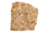

Entity Grimoire
Ancestors

Crinoidal LimestoneDatoliteDioptaseAncestors are the spirits of the once-living dead who remain connected to the living through bonds of blood, chosen kinship, and spiritual lineage. They occupy a liminal space between the world of the living and whatever lies beyond, capable of interaction, guidance, and protection when properly honored. Through ancestor veneration, we tap into the entire human story, a lineage stretching back hundreds of millennia to our shared origin in East Africa.
Types of Ancestors
Ancestral relationships extend beyond biological bloodline. The main categories recognized across traditions include:
| Type | Who They Are | Key Notes |
|---|---|---|
| Blood Ancestors | Direct biological lineage stretching back to Mitochondrial Eve | Honor before other spiritual work; first line of defense against hostile spirits; connected through bodywork and physical sensation |
| Recently Deceased | Blood relatives who have died within living or recent memory | Often still in spiritual transition; may be the most difficult to work with; pray for their passage; offer cool water, light, and soft white cloth |
| Lineage Ancestors | Ancestors formally adopted through legal or ritual means: blood ancestors of adoptive parents, in-laws through marriage, or ancestors gained through spiritual initiation | Behave like blood ancestors; expect special honors; relationships with them are dynamic and can evolve over time |
| Chosen Ancestors | Mentors, elders, and beloved figures who shaped your life without sharing blood | Many traditions recognize chosen lineage as equally valid to blood |
| Spiritual Ancestors | Practitioners from your spiritual tradition who came before you | Witches, healers, and mystics who walked this path in earlier generations |
| Cultural Ancestors | The collective dead of your ethnic, cultural, or national heritage | Connected through shared land, language, and custom |
| Affinity Ancestors | Figures connected by shared identity, vocation, or calling rather than blood | Expect less formal obligation than blood or lineage ancestors; most responsive to petitions related to the quality you share; especially meaningful for those whose history has been suppressed |
| Saints | Elevated ancestors who achieved power through a life of spiritual focus and chose to remain accessible to the living | Not exclusively Catholic; found across Buddhism, Hinduism, Islam, and secular culture; patronage is the innate or developed relationship with a specific saint |
| Spirit Guides | Elevated ancestors who have chosen to walk with a specific individual in this incarnation; not related by blood or lineage | Unlike saints (who are universal), guides are specific to you; may be temporary or lifelong; especially useful for professional diviners and magick workers |
Affinity, Saints, and Spirit Guides: Key Distinctions
Affinity Ancestors hold no formal claim on you and expect no special ritual obligation. What they offer is insight and solidarity in the specific domain you share. A poet can petition dead poets for help with creative blocks or publishing. Someone navigating oppression related to their identity can call on ancestors who faced the same. These relationships are especially meaningful for people whose communities have been erased from mainstream history: honoring affinity ancestors is a way of claiming a lineage that exists even when it has been suppressed.
Saints are ancestors who achieved elevated spiritual power and chose to remain available to the living rather than moving fully into whatever lies beyond. They are not exclusively Catholic or Christian; Buddhism, Hinduism, and Islam all have equivalents, and secular culture produces something like saints too (the spontaneous shrines and offerings left for figures like David Bowie are a recognizable form of the same impulse). Saints are accessible to anyone but may have a particular affinity with those who share their name, birth date, or feast day. This relationship is called patronage. A patron saint will help you achieve your soul's purpose by removing obstacles, providing opportunities, and meeting basic survival needs, as long as you continue work that aligns with their vision.
Spirit Guides are similar to saints in that they are elevated and not blood-related, but where saints are universal figures with broad affinities, guides are specific to you. In the espiritismo traditions of Latin America and the Caribbean, every person has a spiritual court: a group of guides who are especially close to them. These guides are often understood through the Comisiones, groups of spirits from similar ethnic or cultural backgrounds who specialize in particular types of magick. Some guides stay for a lifetime; others come for a reason or a season. Guides tend to be more willing to work for others than blood or lineage ancestors are, making these relationships especially worth cultivating if you practice divination or magick professionally.
Lineage Ancestors: How They Are Acquired
Lineage ancestry is typically established through three pathways:
| Pathway | How It Works | Notes |
|---|---|---|
| Adoption | Legal or ceremonial adoption brings the adoptive family's ancestors into your lineage | Both blood and adoptive lines may bless you; follow your instinct about which to honor more, or both equally. The quieter line may become more present over time. |
| Partnership | A formalized commitment ceremony in front of family and community can draw a partner's ancestors into relationship with you | Ancestors respond to ceremony. They feel closest at key life rituals: baptisms, graduations, weddings, funerals. These are also when divination is especially powerful. Shared altars are an option if both partners are open to it. |
| Initiation | Formal admittance into a spiritual or secular lineage (Wiccan covens, African diasporic traditions, Apostolic succession, doctoral degrees) | Initiation typically involves formal recognition by the lineage ancestors. Brings both access to those ancestors and the responsibility to honor them. |
Magickal Properties
Blessings of a Healthy Practice
In Daily Life
- Physical, mental, and emotional health
- Strengthened love relationships and family bonds
- Creative fertility: children, art, music, writing
- Greater self-knowledge and sense of personal history
- Connection to a story larger than a single lifetime
In Magickal Practice
- Amplified spellwork
- Sharper and more accurate divination
- Easier contact with other types of spirits
- Protection from unwanted spiritual interference
- A stable foundation for all other spirit work
Working With the Ancestors
The foundation of all ancestor work is consistent, respectful relationship-building rather than transactional petition. Regular offerings of water and light, speaking names aloud, sharing meals, and simply acknowledging their presence all strengthen the connection over time.
Before calling on unknown or complicated ancestors, first build a strong relationship with those who were clearly loving and supportive in life. Working outward from a stable center reduces the risk of contact with unresolved or harmful energies within the lineage.
Bodywork as Ancestor Communication
The human body has not fundamentally changed since our ancestors left Africa hundreds of thousands of years ago. Yoga, breathwork, and massage can all be incorporated into blood ancestor practice; invoke them before bodywork, or use these modalities to open communication. Ancestral messages frequently arrive as bodily sensations rather than words or visions.
Ritual Uses
- Establish and maintain an ancestor altar as the primary point of contact
- Offer food, water, light, and remembrance on a regular basis
- Call on them during times of difficulty, transition, or major life decisions
- Include them in seasonal observances, particularly Samhain, Dias de los Muertos, and All Saints' Day
- Use mediumship or divination tools to receive their communication
- Incorporate bodywork as a channel for ancestral messages
Cross-Cultural Examples
Ancestor veneration appears across virtually every human culture:
| Tradition | Region | Practice |
|---|---|---|
| Hungry Ghost Festival | East & Southeast Asia (Buddhist/Taoist) | Food offerings, joss paper, and chants directed to the dead |
| Egungun Masquerades | Yorubaland & Brazil | Ancestors given physical form through costumed ritual performers |
| Sangoma Divination | South Africa | Ancestral wisdom channeled as the foundation of spiritual healing |
| Untitled | Catholic worldwide (November 2) | Feast for the dead incorporating older Pagan customs |
| Untitled / Ocha / Lucumí | Cuba, Brazil & diaspora | Egun honored with offerings and consulted through divination before any ceremony |
| Untitled | Mexico & Latin America | Three-day festival welcoming, feasting, and sending the dead safely on their way |
Ghosts: Distinction from Ancestors
Not all spirits of the deceased are helpful or capable of assisting the living. Those who lack sufficient spiritual power, or who exist in a state of spiritual dis-ease, are distinguished from ancestors and classified as ghosts. Where ancestors are elevated, willing, and oriented toward the wellbeing of the living, ghosts remain bound to the earthly plane by unresolved circumstances: a violent death, an unfulfilled obligation, or an attachment that was never released.
Ghosts typically seek resolution through the living, often by recreating or amplifying the very problems they failed to resolve in life. This makes them unreliable and potentially harmful as spiritual contacts.
Related Spirits
All of the categories discussed (blood ancestors, lineage ancestors, affinity ancestors, saints, guides, and ghosts) share one origin: they were once human. However, the boundary between humanity and other forms of life is not fixed. Several categories of related spirits may be encountered in ancestor veneration practice.
Land Spirits
The spirits of a particular place encompass all beings (human, animal, plant, fungal, and otherwise) that were born, lived, or died on that land. They predate current inhabitants and typically outlast them, which constitutes a form of power in its own right. Land spirits warrant honoring, especially where a family has maintained a multigenerational relationship with a specific piece of land through careful stewardship.
House Spirits
House spirits are understood by some practitioners as a subset of land spirits: the spirits of the land a structure occupies, or of the natural materials used in its construction. They may also be associated with specific structural points within the home (thresholds, hearths, doorways), each carrying its own spiritual function. The spirit of the front door, for example, is often regarded as the guardian of what enters and exits, including other spirits. Which house spirits are honored depends on the layout and nature of the dwelling.
Non-Human Ancestors
Humans evolved from animals, which evolved from earlier life forms including fungi, plants, and single-celled organisms. The entire web of life on earth constitutes a single extended family. This means that at a sufficient remove, ancestors are no longer human, and those non-human ancestors can be included in veneration practice.
Ancestral lines often carry specific affinities to particular plants or animals, which may manifest as recurring symbols, totems, or callings. These connections can be honored directly. Deceased companion animals, given the depth of their bond with the living, are also considered appropriate subjects of ancestor veneration.
Common Questions
What if I don't know who my ancestors are?
Every person has blood ancestors who made their body with theirs. You don't need names or origins to begin. Research and DNA tests can be useful starting points, though both have limits; DNA tests only capture a fraction of genetic inheritance and cannot reveal adoptions, cultural exchanges, or ancestors who are spiritually close but biologically distant. Treat such tools as inspiration rather than commandments. Many practitioners find that new genealogical information surfaces naturally once a consistent veneration practice is established.
What if I don't like my ancestors or am ashamed of them?
Ancestor veneration is still available to you. Your lineage extends far beyond the generations you know. Going back far enough, most lineages include ancestors who lived in right relationship with the earth and with each other. These older ancestors can help bring healing and structure to a line that has accumulated harm. There are also non-blood forms of ancestry: spiritual lineage, shared identity or vocation, and chosen guides, which can form the center of a practice.
What if I don't know my ancestral traditions?
Ancestral wisdom is not a set of fixed instructions to be replicated. It is accumulated knowledge applied to present circumstances. Your ancestors could not have anticipated the world you live in. You carry the responsibility of being the one who is alive now, and they are available to assist, not to override.
What to Expect as the Practice Deepens
Synchronicities and Dreams
As ancestor veneration practice develops, coincidences, synchronicities, and vivid dreams tend to increase in frequency and intensity. These experiences are typically positive: an unexpected encounter that opens a new opportunity, a coincidence that surfaces a memory, a dream that arrives with unusual clarity. Attending to these signs, especially those that carry a quality of delight or recognition, is generally worthwhile. However, balance is important. Over-interpretation of any single sign can lead to obsession or distorted thinking. Synchronicities are worth noting; they are not instructions to be followed to the letter.
Shifts in Living Family Relationships
The spirit world reflects the living world, and vice versa. As a practitioner reaches toward their ancestors, the ancestors (including the oldest and most spiritually elevated) reach forward in turn. When that connection is established, the generations between often begin to shift. Changes in the dynamics of living family members are commonly reported as the practice matures. Asking living relatives about those who came before them can be a valuable point of entry, regardless of whether family members are aware of or involved in the practice.
New Information Arriving Unbidden
Practitioners frequently report that genealogical information, cultural materials, and ancestral knowledge surface without deliberate searching, in the form of found objects, chance conversations, or unexpected resources. This is understood within many traditions as the ancestors themselves facilitating the connection. Those who begin with limited ancestral knowledge are encouraged to trust this process alongside active research.
Performing Ancestral Magick
"Ancestral magick" is not an official category or named tradition. Yet magick can absolutely be performed by calling upon the power of the ancestors. Some practitioners call upon Pagan gods and goddesses. Hoodoo rootworkers and other American folk magickians often call upon the Christian God. Ancestral magick specifically draws on blood ancestors, devoted saints, and spirit guides to create positive change.
The Heart of Ancestral Magick
At its core, ancestral magick consists of formally petitioning the ancestors for a desired outcome and making offerings to them before and after the petition is granted. Most of this work takes place in the home, before the ancestor altar. Depending on where ancestors are interred, some practitioners also perform rites at gravesites; that choice is left to individual discretion. Words and symbols drawn from cultural heritage, family tradition, and personal relationship with the ancestors will carry the most resonance.
Letting the Ancestors Teach You
A second form of ancestral magick does not require petitioning the ancestors directly. Instead, it involves allowing them to teach the practitioner how to perform the working needed to accomplish the goal.
It is easy to dismiss one's own family as non-magickal, especially when surrounded by people who claim secret witchcraft traditions initiated by their grandmothers. Those claims rarely turn out to be accurate. But consider the math: two parents, four grandparents, eight great-grandparents. Go back ten generations and there are 2,048 ancestors in the direct blood lineage alone. Go back eleven generations, and that number climbs to 4,096. Some of those people were magickal specialists in life, and their instruction is now available.
The guidance that comes through may reflect folk magical traditions already familiar from cultural heritage. It is just as likely to surprise. One well-documented example involves a family with preserved knowledge of mediumship and dream contact with the ancestors. A grandmother, herself a powerful medium who regularly communed with deceased relatives in dreams, was warned by an ancestor that the family had been cursed. The warning was confirmed by independent dreams from the mother, aunts, and close female friends of the family. The dreams also revealed the remedy: every clown doll in the grandmother's extensive collection had to be suffocated in black trash bags and discarded, certainly not a traditional ritual. Only after that was done could the family begin healing through more conventional prayer. By following the instructions the ancestors gave through dreams, the curse was lifted.
Saints as Ancestral Masks
Some spells reference Catholic saints, but working with them does not require being Catholic. The cult of the saints is a separate spiritual current that has become intertwined with institutional Catholicism. At its root, it is a necromantic tradition. The spiritual entity venerated as a particular saint after death is not necessarily identical to the historical human they were in life. Historical evidence shows saints being fused together, or a single historical person becoming known as multiple distinct saints. Not all relics attributed to a single saint come from the same body.
The boundary between saint and ancestral line can also be genuinely blurry. What is the difference between Saint Joseph and all the Josephs in a family named after him, or all the forefathers he served as patron? The saints can be called upon as themselves, or as masks for strong, healthy ancestors from one's own lineage. A spell invoking Saint Michael might be addressed to Saint Michael directly, or to the practitioner's warrior ancestors using the imagery of Saint Michael as a focal point, or the Catholic imagery might be set aside entirely and replaced with a different warrior image or a photograph of a brave military ancestor. All of these approaches work.
Timing and the Body
Many ancestral workings call for an element of timing. Magick is always best done when the need is pressing and the energy is there. But performing rites according to nature's rhythm rather than the artificial schedule of the working week adds depth. Acting at auspicious times also invites a kind of surrender to something larger than the individual will, even as that will is being exerted. This tension is worth meditating on regularly.
The active participation of the body is the final vital component. Spell instructions often neglect the body as a simplifying editorial choice. In practice, good spellwork is a feast for the senses. There is no need to rush through each step. Take the time to be fully present in every movement, scent, and spoken word.
Spells Are Like Recipes
Spells are not all the same kind of recipe. Some are like baking: if the recipe is not followed closely, the alchemical reactions fail and what should have been a cake becomes a pan of hot slop. Others are like cooking: easily adapted on the fly without much risk. Still others are like metallurgy: deviate from the instructions and something could go badly wrong.
All spells included here are closer to cooking than to baking or metallurgy. Adapt, substitute, and improvise freely. Ingredients are chosen for local availability and personal resonance. What works well for one practitioner's body, mind, and spirit may be less appropriate for another, and that is entirely fine.
Journal Prompts: Tending the Cauldron of Ancestral Wisdom
Use books and research to explore outward, but also descend inward into the quiet knowing of your soul. Your inner cauldron is stirred by ancestors who speak through dreams, visions, and memory.
- What lands did your ancestors live on? What did they call these lands? What are these lands called now?
- What languages did your ancestors speak?
- What landforms, bodies of water, trees, plants, stones, or other geographical features were important to your ancestors?
- How did your ancestors acknowledge or celebrate the rhythms of nature, the changing of the seasons, the tides, or the moon phases?
- What magickal traditions did your ancestors uphold? What folklore inspired these practices?
- What deities did your ancestors believe in? How did they worship them?
- What foods did your ancestors eat?
- What rites of passage did your ancestors practice (birth, coming of age, marriage, death, etc.)?
- What did your ancestors believe happened to the soul after death?
- What is the origin and history of your surname?
- What history, anthropology, or sociology did you encounter in your education? What did those lessons convey about human nature, and how has that understanding shifted over time?
- Write down all the names of blood and lineage ancestors you know. If adopted, include adoptive parents and their ancestors. If the list is short, identify a living relative who may hold more information, or begin genealogical research.
- What naming patterns exist in your family? Are any relatives named after official or folk saints, or after other family members?
- Beyond blood and lineage ancestry, what other groups or communities do you identify with? Are there historical figures within those groups you particularly admire?
- Have you ever sensed the presence of a guardian or spirit guide? Has there been a moment when a spirit seemed to step forward to protect, guide, or inspire you?